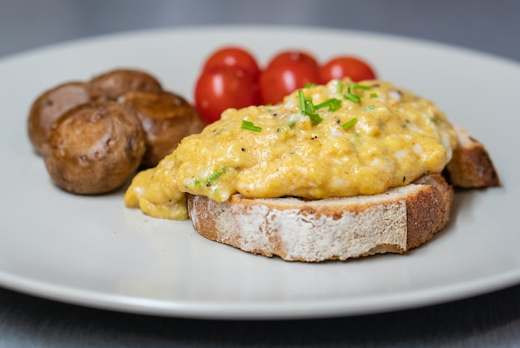

Scrambled Eggs

Ingredients
- 4 large eggs
- 1/4 cup of milk
- pinch of salt
- pinch of pepper
- 2 tsp of butter
Steps
- BEAT eggs, milk, salt and pepper in medium bowl until blended.
- HEAT butter in large nonstick skillet over medium heat until hot. POUR in egg mixture. As eggs begin to set, gently PULL the eggs across the pan with a spatula, forming large soft curds.
- CONTINUE cooking—pulling, lifting and folding eggs—until thickened and no visible liquid egg remains. Do not stir constantly. REMOVE from heat. SERVE immediately.
Source for Recipe
Home